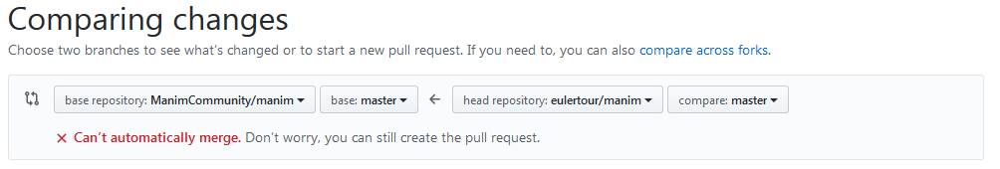

Thank you for contributing to Manim! However you have decided to contribute or interact with the community, please always be civil and respect other members of the community. Manim is a free open source software for mathematical animations, and as such we welcome everyone who is interested in mathematics, pedagogy, computer animations, open source, software development, and beyond. Manim accepts contributions of many kinds, detailed below.
One of the best ways of contributing to Manim is by reporting bugs. If you have encountered something that you believe is a bug, please follow these steps:
First of all, make sure you are running the latest version of manim. If not, update your version and try again.
Make sure to search for other users who may have had similar issues in the past. Search the repository’s issues page (don’t forget to search closed issues), bring it up on Discord, use sites like StackOverflow, and exercise your best Google practices. If you can’t find anything helpful, then go to the next step.
Make sure you can reproduce the issue, i.e. that you have some code that illustrates the bug every time (or at least most of the time) it is executed.
Make sure to clarify what behavior you expected, and how the actual behavior differs from your expectation.
Make sure to gather information about your environment, such as your operating system, python version, and any stack traces that the code may have generated (if applicable).
Please open an issue only after you have gathered this information. When submitting an issue, make sure to follow the template (this is the default text you are shown when first opening the ‘New Issue’ page). A community member will (hopefully) respond and start a conversation to address the issue.
Please give the community a reasonable amount of time before asking again, or insisting on your issue. Keep in mind that everyone is a volunteer. If you wait for a reasonable amount of time and you receive no response, feel free to ask again.
Many ways of contributing will involve writing, reading, testing, or refactoring code. As our repository is a Fork of Manim by 3b1b, contributing in this way can be a bit confusing. Here is a short guide on how to do it.
First, make a fork of this repository. This creates your own copy of the whole codebase on GitHub.
Clone the repository you forked using the command below (bash/zsh).
git clone <your-fork-url>
cd manim
Note: do not git clone the original ManimCommunity repository. You must
clone your own fork. After this step, there are three different
repositories to keep track of: the original ManimCommunity repo, your own
fork of it, and your local repository.
You have to make git be aware of the two remote repositories, by entering
the commands below.
git remote add upstream https://github.com/ManimCommunity/manim.git
git fetch upstream
After these commands, your local repository can keep track of your fork (referred to as ‘origin’) as well as the main ManimCommunity repository (referred to as ‘upstream’).
Choose the correct branch for your changes. If you are working on a branch that already exists on the main repository, you can execute
git checkout -b <branch-name> upstream/master
If you are starting a new branch, execute
git checkout -b <new_branch-name>
You can now make any changes to your local repository, add them, and commit them.
To make your changes visible in your GitHub fork, instead of typing in git push as usual, you need to enter the command below.
git push -u origin <branch-name>
Doing so creates a new branch with the updated contents of your fork on GitHub (the ‘origin’).
If you want your changes to be incorporated to the main ManimCommunity
repository, you need to make sure that there are no merge conflicts between
the current upstream/master and the changes you are trying to make. For
this purpose, please execute git pull upstream master before you push
changes to your fork. If this generates merge conflicts, make sure to
resolve them before submitting a PR.
Further, make sure that you run the tests locally and that they all pass
before submitting a PR. You can run the tests locally by executing pytest
from the main manim/ folder (do not execute pytest from the code folder
manim/manim).
Finally, make sure to use the black autoformatter before submitting a PR.
You can execute it by running black <your_file>. This will make changes
to your code, and you will need to add/commit those changes.
To request the ManimCommunity dev team to incorporate the changes in your
fork into the main repository, you can make a Pull Request to the Manim
Community repo from your fork. Make sure to select ManimCommunity/manim
instead of 3b1b/manim as the base repository and your fork and branch as
head repository - see the picture below.

Once again, please make sure to follow the template (this is the default text you are shown when first opening the ‘New Pull Request’ page)
Once a PR is submitted, it will require at least two approving code reviews from community developers, as well as all tests passing. It is very likely that you will be asked to edit or modify your PR in one way or another during this process. This is not an indictment of your work, but rather a strong signal that the dev community wants to merge your changes!
Note: before submitting a PR please make sure that you update the docstrings of any methods, classes, or modules that your PR modifies, if necessary.
Note: if you are contributing new features or bug fixes, it is strongly
preferred that you include tests that accompany them in your PR. For this
purpose, you can create a new file under the tests/ folder and make sure that
your new tests pass before submitting your PR. Please check out the Wiki Entry
for Testing to learn
more about how our tests work.
Note: if you are contributing documentation, you must also make sure that the
command make doctest, executed from the docs/ folder terminates without
problems. Please check out the Wiki Entry for
Documentation
to learn more about how we prefer our code documented.
Note: In order to open a PR, you do not need to have everything (documentation/tests) complete and ready to go. However, the more complete your PR is, the easier it will be for community devs to review it, and the quicker it will be merged. If you open a PR that is still under development and you want a quick overview or start some discussion about planned yet-to-be-implemented changes, please mark your PR as a draft.
When submitting a PR, please make special note of whether your proposed changes will result in breaking changes.
When submitting a PR, make sure that your proposed changes are as general as possible, and ready to be taken advantage of by all of manim’s users. In particular, leave out any machine-specific configurations, or any personal information it may contain.
If you are a maintainer, please label issues and PRs appropriately and frequently.
When opening a new issue, if there are old issues that are related, link them in your new issue (even if the old ones are closed).
When submitting a code review, it is highly recommended that you adhere to these general guidelines. Similarly, when crafting commit messages, it is highly recommended that you adhere to these guidelines.
If you find stale or inactive issues that seem to be irrelevant, please post a comment saying ‘This issue should be closed’, and a community developer will take a look.
Please do as much as possible to keep issues, PRs, and development in general as tidy as possible.